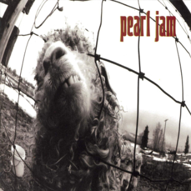

Vs.
Temes
- Go
- Animal
- Daughter
- Glorified G
- Dissident
- W.M.A.
- Blood
- Rearviewmirror
- Rats
- Elderly Woman Behind The Counter In A Small Town
- Leash
- Indifference
Descripció
Vs. és el nom del segon àlbum de la banda nord-americana Pearl Jam, gravat al març de 1993 i llançat aquest mateix any. Vs també va ser el primer àlbum produït per Brendan O'Brien, qui es convertiria en productor de capçalera durant diversos àlbums més.
Vs. té un so molt més cru i potser amb menys cohesió comparat amb el seu predecessor Ten. Tot i això s'ha convertit en un dels àlbums fonamentals del grup.
Vs. va incloure diverses cançons que es convertirien en èxits com "Daughter", "Dissident", "Animal" o "Go". Menció a part mereix "Daughter" ja que aconseguiria el número 1 a les llistes de Billboard de Rock Modern i Rock Mainstream, romanent vuit setmanes en aquest lloc. El 1995 l'àlbum va rebre 2 nominacions als premis Grammy, Millor Àlbum de Rock i Millor Actuació de Rock a Duo o en Grup Vocal.
El tema central i la raó del títol de l'àlbum és sens dubte el conflicte. Diverses cançons reflecteixen la insatisfacció de la banda pel seu estatus d'estrelles. Es poden trobar crítiques agudes als mitjans musicals (a la cançó "Blood"), a la manera com són tractats com a objectes comercials (a "Animal") o a l'exagerat culte dels nord-americans per les armes (a "Glorified G"), per esmentar-ne algunes.